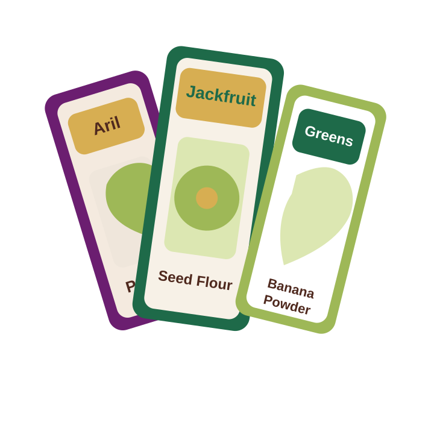
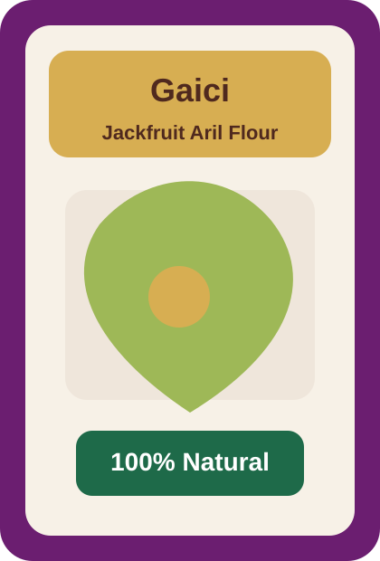
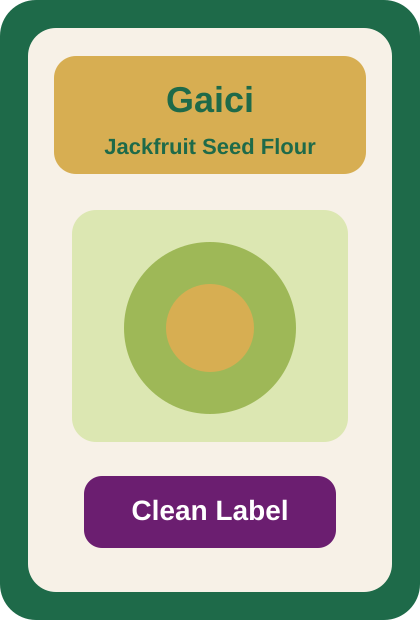
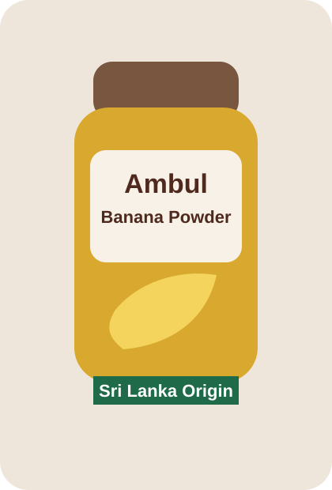

About Us
Learn how Gaici positions Sri Lankan agriculture through honest sourcing, founder-led storytelling, and a clear product identity.
Read moreLoading
Sri Lankan Origin
Gaici brings clean, modern pantry ingredients made from jackfruit and green banana, presented in a structured product range for local and export-ready use.

Built around ingredient clarity, Sri Lankan sourcing, and a simple product line that is easy to present across retail, export, and food service channels.
What We Do
Learn how Gaici positions Sri Lankan agriculture through honest sourcing, founder-led storytelling, and a clear product identity.
Read moreThe range is intentionally simple: Jackfruit Flour, Jackfruit Seed Flour, and Green Banana Flour.
See productsUse the contact page to place inquiries, connect with the team, or prepare the page for your final lead capture workflow.
Get in touchFeatured Products
A smooth, versatile flour-style ingredient prepared from jackfruit for use in baking, cooking, beverage blends, and wellness-focused pantry formats.

A pantry-friendly flour prepared from jackfruit seed, positioned for functional formulations, savory recipes, and better-for-you food concepts.

Produced from green banana and presented as a structured pantry ingredient for modern retail, recipe development, and natural food positioning.

Why This Range Works
Next Step
Use the contact page for your final email, phone, address, and form workflow.